설비보전기사 (2022-04-24 기출문제)
1과목: 설비진단 및 계측
1. 질량 불평형(언밸런스, Unblance)의 진동 특성으로 틀린 것은?
- 수평·수직 방향에 최대의 진폭이 발생한다.
- 회전 주파수 1f 성분의 탁월 주파수가 나타난다.
- 길게 돌출된 로터의 경우에는 축방향 진폭은 발생하지 않는다.
- 언밸런스 양과 회전수가 증가할수록 진동 레벨이 높게 나타난다.
(정답률: 79%)

2. 소음기(silencer, muffler)를 사용할 때, 저감되는 소음의 종류는?
- 고체음
- 기계적 발생소음
- 전자적 발생소음
- 공기음(air-borne sound)
(정답률: 81%)
3. 시정수 τ의 정의로 옳은 것은?
- 출력이 최종 값의 50%가 되기까지의 시간
- 출력이 최종 값의 63%가 되기까지의 시간
- 출력이 최종 값의 90%가 되기까지의 시간
- 출력이 최종 값의 10%에서 90%까지의 경과시간
(정답률: 75%)
4. 측정 대상에 제한 없이 기체·액체를 측정할 수 있으며, 유체의 조성, 밀도, 온도, 압력 등의 영향을 받지 않고 유량에 비례한 주파수로 체적 유량을 측정할 수 있는 유량계는?
- 면적식 유량계
- 와류식 유량계
- 용적식 유량계
- 터빈식 유량계
(정답률: 63%)
5. 소음과 관련된 용어에 대한 설명으로 틀린 것은?
- 음파 : 공기 등의 매질을 전파하는 소밀파
- 파면 : 파동의 위상이 같은 점들을 연결한 면
- 파동 : 매질의 변형운동으로 이루어지는 에너지 전달
- 음의 회절 : 음파가 한 매질에서 타 매질로 통과할 때 구부러지는 현상
(정답률: 71%)
6. 주파수가 50Hz, 100Hz 인 다음 두 개의 파동이 중첩되면 나타나는 파동은? (단, 두 파형의 진폭은 같다.)
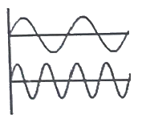
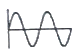
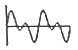
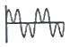
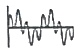
(정답률: 79%)
7. 오일 분석법의 종류가 아닌 것은?
- 회전전극법
- 원자흡광법
- 저주파흡광법
- 페로그래피법
(정답률: 58%)
8. 차압기구인 오리피스에서 차압을 뽑아내는 방식이 아닌 것은?
- 코너 탭
- 축류 탭
- 벤투리 탭
- 플랜지 탭
(정답률: 68%)
9. 가동 코일형 속도 센서의 측정 원리는?
- 연속의 법칙
- 피켓 펜스 법칙
- 질량 보존의 법칙
- 패러데이의 전자 유도 법칙
(정답률: 80%)
10. 소음방지 방법의 3가지 기본 방법이 아닌 것은?
- 차음
- 흡음
- 소음기
- 진동 전이
(정답률: 82%)
11. 동적배율에 관한 설명으로 틀린 것은?
- 고무의 동적배율은 1 이상이다.
- 고무의 영률이 커질수록 동적배율은 작아진다.
- 동적 스프링 정수가 커질수록 동적배율은 커진다.
- 정적 스프링 정수가 커질수록 동적배율은 작아진다.
(정답률: 60%)
12. 압전형 가속도 센서의 특징으로 틀린 것은?
- 소형으로 가볍다.
- 사용 온도 범위가 넓다.
- 주파수 범위는 광대역이다.
- 저감도이므로 센서를 손으로 고정하여 사용한다.
(정답률: 80%)
13. 다음 정현파에서 a, b, c, d 중 의미가 틀린 것은?
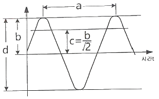
- a : 주기
- b : 편진폭
- c : 진폭의 평균값
- d : 양진폭
(정답률: 78%)
14. 그림과 같은 스프링을 설치하였을 경우 합성 스프링 상수 k를 구하는 식으로 옳은 것은? (단, k1과 k2는 각각의 스프링 상수이다.)
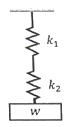
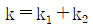
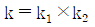
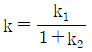
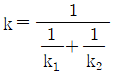
(정답률: 79%)
15. 발음원이 이동할 때 원래 발음원의 음보다 그 진행 방향 쪽에서는 고음으로, 진행 방향 반대쪽에서는 저음으로 되는 현상은?
- 도플러(Doppler) 효과
- 마스킹(Masking) 효과
- 호이겐스(Huydens') 원리
- 음의 간섭(Interference) 효과
(정답률: 74%)
16. 기계진동의 크기 또는 양을 평가하는데 사용되는 측정 변수가 아닌 것은?
- 무게
- 변위
- 속도
- 가속도
(정답률: 70%)
17. 표면에 열린 결함만을 검출할 수 있는 비파괴 검사는?
- 자분탐상검사
- 침투탐상검사
- 방사선투과검사
- 초음파탐상검사
(정답률: 64%)
18. 광전센서의 특징으로 틀린 것은?
- 검출거리가 짧다.
- 응답속도가 빠르다.
- 비접촉으로 검출할 수 있다.
- 분해능이 높은 검출이 가능하다.
(정답률: 69%)
19. 구면(형)파(spherical wave)에 대한 설명으로 옳은 것은?
- 음파의 진행 반대방향으로 에너지를 전송하는 파이다.
- 음파의 파면들이 서로 평행한 파에 의해 발생하는 파이다.
- 음원에서 모든 방향으로 동일한 에너지를 방출할 때 발생하는 파이다.
- 둘 또는 그 이상 음파의 구조적 간섭에 의해 시간적으로 일정하게 음압의 최고와 최저가 반복되는 패턴의 파이다.
(정답률: 71%)
20. 와류탐상검사의 장점에 해당하지 않는 것은?
- 검사를 자동화할 수 있다.
- 비접촉법으로 할 수 있다.
- 검사체의 도금두께 측정이 가능하다.
- 형상이 복잡한 것도 쉽게 검사할 수 있다.
(정답률: 59%)
2과목: 설비관리
21. TPM의 우선순위 활동인 자주보전의 효과측정을 위한 방법에 해당하지 않는 것은?
- 기준서 작성현황 확인
- MTBF(평균가동시간)의 연장
- OPL(One Point Lesson) 작성현황 확인
- FMCEA(고장유형, 영향 및 심각도 분석)
(정답률: 52%)
22. 설비의 보전성에서 수리율을 나타내는 것은?
- MTTR
- MTBF
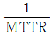
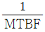
(정답률: 60%)
23. 다음 윤활방식 중 비순환 급유방법이 아닌 것은?
- 손 급유법
- 유욕 급유법
- 적하 급유법
- 사이펀 급유법
(정답률: 64%)
24. 설비의 경제성을 평가하기 위한 방법이 아닌 것은?
- 자본회수법
- MAPI 방식
- MTTR 방식
- 연평균 비교법
(정답률: 59%)
25. 공기압축기의 윤활관리에 대한 설명으로 틀린 것은?
- 터보형 공기압축기에서는 내부 윤활이 필요하다.
- 회전식 압축기에서는 로터나 베인에서 윤활작용을 한다.
- 왕복식 압축기에서는 ISO VG 68 터빈유를 사용한다.
- 왕복식 압축기에서는 실린더 라이너와 피스톤 링에서 감마작용을 한다.
(정답률: 50%)
26. 윤활유 급유법 중 기계의 운동부가 기름 탱크 내의 유면에 미소하게 접촉하면 기름의 미립자 또는 분무상태로 기름 단지에서 떨어져 마찰면에 튀겨 급유하는 것은?
- 패드 급유법
- 비말 급유법
- 그리스 급유법
- 사이펀 급유법
(정답률: 77%)
27. 다음 중 품질보전의 전개순서를 가장 바르게 나열한 것은?
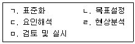
- ㄴ→ㄹ→ㄷ→ㄱ→ㅁ
- ㄴ→ㄹ→ㄷ→ㅁ→ㄱ
- ㄹ→ㄴ→ㄷ→ㅁ→ㄱ
- ㄹ→ㄷ→ㄴ→ㄱ→ㅁ
(정답률: 61%)
28. 유압 작동유에 필요한 성질이 아닌 것은?
- 산화안정성이 좋아야 한다.
- 마모방지성이 좋아야 한다.
- 부식 방지성 및 방청성을 가져야 한다.
- 온도변화에 따른 점도의 변화가 커야 한다.
(정답률: 79%)
29. 다음 중 신뢰성의 평가 척도로 가장 적절하지 않은 것은?
- 고장률
- LT(Lead Time)
- MTTF(Mean Time To Failure)
- MTBF(Mean Time Between Failures)
(정답률: 70%)
30. 설비배치에 대한 설명으로 틀린 것은?
- 제품별 설비배치는 작업의 흐름 판별이 용이하다.
- 기능별 설비배치는 소품종 대량생산의 경우에 알맞은 배치 형식이다.
- 총체적 설비배치 계획은 공장입지선정, 건물배치계획, 부서배치계획 및 설비배치계획 단계로 실시된다.
- GT셀(Group Techniligy Cell)은 여러 종류의 기계 그룹에서 속하는 대부분의 부품을 가공할 수 있는 경우의 설비배치이다.
(정답률: 64%)
31. 그리스의 시험방법 중 그리스의 장기간 보존 시 기유와 증주제의 분리정도를 알기 위한 것은?
- 적점 측정
- 누설도 측정
- 이유도 측정
- 산화안정도 측정
(정답률: 70%)
32. 다음과 같이 공업용 윤활유에 표시된 “VG”의 의미는?
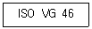
- 비중 등급
- 주도 등급
- 점도 한계
- 점도 등급
(정답률: 68%)
33. 벤투리 원리를 이용한 윤활방식은?
- 분무 급유법
- 원심 급유법
- 칼라 급유법
- 비말 급유법
(정답률: 48%)
34. 윤활유의 열화 판정법 중 간이 측정에 의한 방법이 아닌 것은?
- 냄새를 맡아보고 판단한다.
- 손으로 기름을 찍어 보고 점도의 대소를 판단한다.
- 사용유의 대표적 시료를 채취하여 성상을 조사한다.
- 기름을 소량의 증류수로 씻어낸 수분을 취하여 리트머스 시험지를 적셔 산성여부를 판단한다.
(정답률: 66%)
35. 윤활기술자가 라인적 조직관계가 있는 경우, 윤활기술자의 직무로 거리가 가장 먼 것은?
- 구매경비의 절약
- 윤활관계의 개선 시험
- 급유장치의 보수와 설치
- 사용 윤활유의 선정 및 품질관리
(정답률: 69%)
36. 종합적 생산보전(TPM)에서 개별설비의 종합적인 이용효율을 나타내는 지수인 설비의 종합이용효율을 계산하는데 필요한 항목이 아닌 것은?
- 양품률
- 노동 효율
- 시간 가동률
- 성능 가동률
(정답률: 63%)
37. 윤활제의 첨가제 중 산화에 의하여 금속 표면에 붙어 있는 슬러지나 탄소 성분을 녹여 기름 중의 미세한 입자 상태로 분산시켜 내부를 깨끗이 유지하는 역할을 하는 것은?
- 소포제
- 청정 분산제
- 유성 향상제
- 유동점 강하제
(정답률: 73%)
38. 설비의 라이프사이클에 걸쳐 설비 자체의 비용, 보전비, 유지비 및 설비 열화 손실과의 합계를 낮춰 기업의 생산성을 높일 수 있도록 하는 보전은?
- 개량보전
- 사후보전
- 생산보전
- 예방보전
(정답률: 60%)
39. 공사를 완급도에 따라 구분할 때 구두 연락으로 즉시 착공하고, 착공 후 전표를 제출하는 공사는?
- 예비공사
- 긴급공사
- 준급공사
- 계획공사
(정답률: 77%)
40. 연소관리 중 연소의 합리화를 위해서는 연소율을 적당히 유지하는 것이 필요하다. 부하가 과대한 경우의 대책으로 틀린 것은?
- 연소방식을 개량한다.
- 이용할 노상면적을 작게 한다.
- 연도를 개조하여 통풍이 잘되게 한다.
- 연료의 품질 및 성질이 양호한 것을 사용한다.
(정답률: 68%)
3과목: 기계일반 및 기계보전
41. 다음 메타니컬 실의 종류 중 스터핑 박스의 내측에 회전링을 설치하는 밀봉으로 유체의 누설 압력이 실의 외부에서 내부로 작용하며, 내류형이라고도 하는 것은?
- 더블형
- 탠덤형
- 인사이드형
- 아웃사이드형
(정답률: 73%)
42. 테르밋 용접법의 특징으로 옳은 것은?
- 전기가 필요하다.
- 용접 작업 후 변형이 작다.
- 용접 작업의 과정이 복잡하다.
- 용접형 기구가 복잡하여 이동이 어렵다.
(정답률: 67%)
43. 다음 중 축 고장 시 설계 불량의 직접원인으로 거리가 가장 먼 것은?
- 재질 불량
- 치수강도 부족
- 끼워맞춤 불량
- 형상구조 불량
(정답률: 69%)
44. 볼·너트의 풀림을 방지하는 방법 중 와셔를 굽히거나, 구멍을 만들어 그곳에 끼운 후 고정하는 방법은?
- 폴 와셔에 의한 방법
- 스프링 와셔에 의한 방법
- 이붙이 와셔에 의한 방법
- 혀붙이 와셔에 의한 방법
(정답률: 71%)
45. 관이음의 종류 중 신축이음에 사용하는 이음쇠의 형태가 아닌 것은?
- 루프형
- 파형관형
- 미끄럼형
- 유니온형
(정답률: 58%)
46. 고장의 유무에 관계없이 급유, 점검, 청소 등 점검표(check list)에 의해 설비를 유지 관리하는 보전활동은?
- 정기보전
- 일상보전
- 재생보전
- 순회보전
(정답률: 72%)
47. 선반가공에서 발생하는 구성인선을 방지하기 위한 방법으로 틀린 것은?
- 절삭 깊이를 적게 한다.
- 절삭 속도를 느리게 한다.
- 공구의 경사각을 크게 한다.
- 윤활성이 좋은 절삭유제를 사용한다.
(정답률: 64%)
48. 공기 중에는 액체 상태를 유지하고 공기가 차단되면 중합이 촉진되어 경화, 접착되는 것으로 진동이 있는 차량, 항공기, 동력기 등의 체결용 요소 풀림과 누설 방지를 위해 사용되는 접착제는?
- 액상 개스킷
- 혐기성 접착제
- 열 용융형 접착제
- 금속구조용 접착제
(정답률: 70%)
49. 게이트 밸브라고도 하며 유체의 흐름에 대하여 수직으로 개폐하여 보통 전개, 전폐로 사용하는 밸브는?
- 앵글 밸브
- 체크 밸브
- 글로브 밸브
- 슬루스 밸브
(정답률: 56%)
50. 기어 제도의 도시 방법 중 선의 사용 방법이 틀린 것은?
- 피치원은 가는 실선으로 표시한다.
- 이골원은 가는 실선으로 표시한다.
- 잇봉우리원은 굵은 실선으로 표시한다.
- 잇줄 방향은 통상 3개의 가는 실선으로 표시한다.
(정답률: 45%)
51. 큰 구멍의 다듬질에 사용되며 날과 자루가 별도로 되어 있어 조립하여 사용하는 리머는?
- 셀(shell) 리머
- 브리지(bridge) 리머
- 팽창(expansion) 리머
- 조정(adjustable) 리머
(정답률: 68%)
52. 다음 통풍기 및 송풍기의 분류 중 용적형은 어느 것인가?
- 터보 팬
- 다익 팬
- 루트 블로어
- 축류 블로어
(정답률: 52%)
53. 다음 중 안전관리의 정의로 가장 적절한 것은?
- 사고로부터 피해를 최소화하기 위한 계획적이고 체계적인 활동
- 생산성 향상을 최우선 목표로 하는 계획적이고 조직적인 활동
- 인간 존중의 정신에 입각한 과학적이며 주기적인 활동
- 재해로부터 인간의 생명과 재산을 보호하기 위한 계획적이고 체계적인 제반활동
(정답률: 69%)
54. 무단 변속기에 대한 설명으로 틀린 것은?
- 체인식 무단 변속기의 변속조작은 회전 중이 아니면 할 수 없다.
- 벨트식 무단 변속기는 유욕식이 아니므로 윤활불량을 일으키기 쉽다.
- 마찰 바퀴식 무단 변속기의 변속조작은 반드시 정지 중에 해야 한다.
- 체인식 무단 변속기는 보통의 사용 상태에서 일반적으로 1000~1500시간마다 오픈하여 체인의 느슨함을 체크하여야 한다.
(정답률: 62%)
55. 산업안전보건법령상 보일러에 압력방출장치를 2개 설치하는 경우 한 개는 최고사용압력 이하에서 작동하고 다른 하나는 최고사용압력의 최대 몇 배 이하에서 작동되어야 하는가?
- 1배
- 1.02배
- 1.⑤배
- 1.2배
(정답률: 60%)
56. CNC공작기계 서보기구의 제어방식이 아닌 것은?
- hybrid control system
- open-loop control system
- closed-loop control system
- semi open-loop control system
(정답률: 58%)
57. 일반적인 V벨트 전동장치의 특징으로 틀린 것은?
- 이음매가 없어 운전이 정숙하다.
- 지름이 작은 폴리에도 사용할 수 있다.
- 홈의 양면에 밀착되므로 마찰력이 평벨트보다 크다.
- 설치면적이 넓으므로 축간 거리가 짧은 경우에는 적합하지 않다.
(정답률: 68%)
58. 원심 펌프의 임펠러에 의해 유체에 가해진 속도에너지를 압력에너지로 변환되도록 하고 유체의 통로를 형성해 주는 역할을 하는 일종의 압력용기는?
- 웨어링
- 케이싱
- 안내 깃
- 스터핑 박스
(정답률: 65%)
59. 산업안전보건법령상 안전보건표시 중 지시표지의 색채로 맞는 것은?
- 바탕은 녹색, 관련 그림은 흰색
- 바탕은 흰색, 관련 그림은 녹색
- 바탕은 흰색, 관련 그림은 빨간색
- 바탕은 파란색, 관련 그림은 흰색
(정답률: 62%)
60. 담금질하여 경화된 강을 변태가 일어나지 않는 A1점(온도)이하에서 가열한 후 서냉 또는 공랭하는 열처리 방법으로 재료에 인성을 부여하는 작업으로 가장 적합한 것은?
- 뜨임
- 불림
- 풀림
- 질화
(정답률: 64%)
4과목: 공유압 및 자동화
61. 관성으로 인한 충격으로 실린더가 손상되는 것을 방지하기 위해 쿠션장치가 내장된 공기압 실린더에 부착하여 함께 사용하면 쿠션 효과가 감소되는 것은?
- 급속 배기 밸브
- 압력 조절 밸브
- 교축 릴리프 밸브
- 파일럿 체크 밸브
(정답률: 60%)
62. SI 단위계에서 압력을 나타내는 단위는?
- 줄(J)
- 뉴턴(N)
- 와트(W)
- 파스칼(Pa)
(정답률: 74%)
63. 두 개의 입구와 한 개의 출구가 있는 밸브로 두 개의 입구에 압력이 모두 작용해야 출력이 발생하는 밸브는?
- 스톱(stop) 밸브
- 체크(check) 밸브
- 2압(two pressure) 밸브
- 급소 배기(quick exhaust) 밸브
(정답률: 75%)
64. 유체의 성질에 관한 설명으로 옳지 않은 것은?
- 밀도는 단위 체적 당 유체의 질량이다.
- 비중량은 단위 체적 당 유체의 질량이다.
- 비체적은 단위 체적 당 유체의 질량이다.
- 비중은 4℃의 물과 같은 체적을 갖는 다른 물질과의 비중량 또는 밀도와의 비이다.
(정답률: 49%)
65. 롤러 체인 Free Flow 컨베이어형 자동 조립라인에서 팔레트가 작업위치에 인입되어도 스토퍼 실린더가 상승하지 않아서 팔레트의 흐름을 정지시키지 못하고 있을 때의 트러블 원인은?
- 컨베이어의 이송속도를 제어하는 인버터의 고장으로 이송속도가 제어되지 않는다.
- 롤러 체인의 틈새로 스크루 볼트가 박혀서 체인 구동 모터가 과부하로 트립되고 있다.
- 스토퍼 실린더를 구동하는 솔레노이드 밸브의 코일이 소손되어 밸브가 절환되지 않는다.
- 제어반 내 PLC CPU의 운전 Key S/W를 RUN모드가 아닌 STOP모드에 두어, PLC가 정지되었다.
(정답률: 64%)
66. 전기제어 회로에서 릴레이 접점을 통해 자신의 릴레이 코일에 전기 신호를 계속 흐르게 하여 릴레이 코일의 여자 상태가 지속되게 하는 회로는?
- 동조 회로
- 비동기 회로
- 인터록 회로
- 자기유지 회로
(정답률: 75%)
67. 유압 시스템의 특징으로 옳은 것은?
- 무단 변속이 가능하다.
- 원격조작이 불가능하다.
- 온도의 변화에 둔감하다.
- 고압에서도 누유의 위험이 없다.
(정답률: 63%)
68. 다음 회로에 관한 설명으로 옳은 것은?
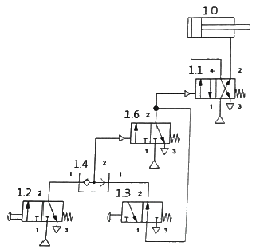
- 1.3밸브를 누르면 1.0실린더가 전진하고, 1.2밸브를 누르면 1.0실린더가 후진한다.
- 1.2밸브와 1.3밸브를 동시에 동작시켜야 실린더가 전진하고 두 밸브를 동시에 놓아야 즉시 후진한다.
- 1.2밸브와 1.3밸브를 동시에 동작시켜야 실린더가 전진하고 두 밸브 중 하나를 놓으면 즉시 후진한다.
- 1.2밸브를 누르면 1.0실린더가 전진하고, 1.2밸브를 놓아도 계속 전진하며 1.3밸브를 누르면 1.0실린더가 후진하고, 1.3밸브를 놓아도 계속 후진한다.
(정답률: 69%)
69. 유압 펌프에 관한 설명으로 옳은 것은?
- 기어 펌프는 외접식과 내접식이 있으며 가변용량형 펌프이다.
- 유압 펌프는 유압 에너지를 기계적 에너지로 변환시켜주는 장치이다.
- 유압 펌프에서 내부 누유가 많이 발생할수록 용적 효율은 감소한다.
- 베인 펌프는 기어 펌프나 피스톤 펌프에 비해 토출압력의 맥동이 크며 고정용량형만 있다.
(정답률: 49%)
70. 전효율 80%, 토출 압력이 60bar, 토출 유량이 100L/min인 경우 펌프의 필요(소요) 출력은 몇 kW 인가?
- 10
- 12.5
- 17.5
- 20
(정답률: 53%)
71. 유압 실린더를 설치하는 방법으로 피스톤 로드의 중심선에 대하여 직각 방향으로 실린더 양측에 피벗(pivot)을 두어 지지하는 방식은?
- 다리 형(foot type)
- 플랜지 형(flange type)
- 클레비스 형(clevis type)
- 트러니언 형(trunnion type)
(정답률: 59%)
72. 2개의 회전자를 서로 90° 위상으로 설치하여 회전자 간의 미소한 틈을 유지하고 역방향으로 회전시키는 공기압축기는?
- 베인형
- 스크롤형
- 스크루형
- 루트 블로어형
(정답률: 53%)
73. 실린더를 임의의 위치에서 고정시킬 수 있도록 밸브의 중립위치에서 모든 포트를 막은 형식의 4/3 way 밸브는?
- 오픈 센터형
- 탠덤 센터형
- 세미오픈 센터형
- 클로즈드 센터형
(정답률: 61%)
74. 서로 이웃한 컴퓨터와 터미널을 연결시킨 네트워크 구성형태이며, 통신회선 장애가 있거나 하나의 제어기라도 고장이 있을 경우 모든 시스템이 정지될 수 있는 네트워크는?
- 성형(star)
- 환형(ring)
- 망형(mesh)
- 트리형(tree)
(정답률: 67%)
75. 서보모터(servo motor)의 전동기 및 제어장치 구비조건으로 적절하지 않은 것은?
- 유지 보수가 용이할 것
- 고속운전에 내구성을 가질 것
- 저속 영역에서 안전한 특성을 가질 것
- 회전수 변동이 크고 토크 리플(torque ripple)이 클 것
(정답률: 72%)
76. 제어 시스템에서 처리되는 정보 표시 형태에 따른 제어계가 아닌 것은?
- 2진 제어계
- 디지털 제어계
- 시퀀스 제어계
- 아날로그 제어계
(정답률: 50%)
77. 위치데이터를 서보 오프 상태에서 수동 조작하여 위치를 확인한 후 데이터를 입력하는 제어 방법은?
- 서보 레디(servo ready)
- 직선 보간(linear interpolation)
- 포인트 투 포인트(point to point)
- 티칭 플레이 백(teaching play back)
(정답률: 59%)
78. 축압기의 취급 상 주의사항으로 적절하지 않은 것은?
- 봉입가스로 반드시 산소를 사용한다.
- 운반, 결합, 분리 등을 할 경우 반드시 봉입된 가스를 빼고 한다.
- 축압기에 부속품 등을 용접하거나 가공, 구멍 뚫기 등을 해서는 안 된다.
- 가스 봉입형은 작동유를 내용적의 10% 정도 미리 넣은 다음 가스의 소정 압력으로 봉입한다.
(정답률: 66%)
79. 자동화의 종류 중 다품종 생산을 위한 유연성 생산 시스템을 나타내는 용어는?
- FA
- CIM
- FMS
- IMS
(정답률: 67%)
80. PLC(Programmable Logic Controller)의 출력 인터페이스로 적합하지 않은 것은?
- 램프(lamp)
- 부저(buzzer)
- 리밋 스위치(limit switch)
- 솔레노이드 밸브(solenoid valve)
(정답률: 68%)